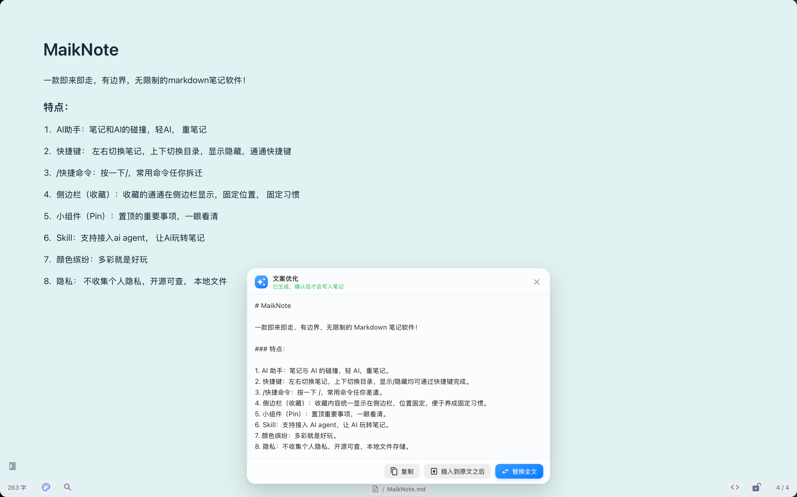
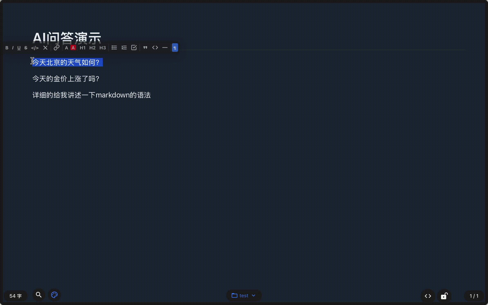

悬浮窗与全局快捷键
无边框透明窗口叠加原生毛玻璃，透明度、置顶、窗口层级可调；记住每个显示器与 Space 的位置，冷启动居中。可选开机自启，关闭窗口时隐藏到后台而不是退出。
macOS 12+ · 版本 · GPL-2.0
MaikNote 是一款 macOS 原生的悬浮便签。全局快捷键随叫随到，所见即所得地写 Markdown，
笔记就是 iCloud 里的一个个 .md 文件——多设备同步不需要任何账号体系。
免费 · 无需注册 · 数据仅留在本机与你的 iCloud

一个全局快捷键（默认 ⌘⌥A）唤起或隐藏，失焦自动收起，不占桌面、不留痕迹。
实时渲染 Markdown，不需要切到预览。
没有云账号、没有私有格式、没有订阅墙。笔记就是纯文本文件，随时能带走。
FEATURES
无边框透明窗口叠加原生毛玻璃，透明度、置顶、窗口层级可调；记住每个显示器与 Space 的位置，冷启动居中。可选开机自启，关闭窗口时隐藏到后台而不是退出。
/ 斜杠命令、表格与待办清单、代码高亮与一键复制、颜色与字体样式、源码模式（⌘/）。
⇧⌘D 把笔记钉到桌面，可拖动缩放、直接勾选任务回写正文、一键复制；三档图层：最上层 / 普通 / 钉在桌面。
屏幕边缘的一条小白条，鼠标移入即滑出。上下左右四向可选，宽度、触发长度、颜色可调，还能选中即复制、勾选回写。
右键「AI 助手」：有选中就只发选中的内容，没选中就发整篇。助手与提示词可自定义，默认接 DeepSeek，也兼容任何 OpenAI 风格接口。
笔记以「标题.md」真实文件存放在 iCloud 目录，文件名就是标题、文件夹就是目录，在 Finder 里能直接看见、编辑、备份。
没有账号、没有埋点、没有云端索引。AI 只在你主动调用时把内容发往你配置的接口；所有编辑与检索都在本机完成。
SCREENSHOTS
全部为 macOS 实机截图，未做任何修饰。


AI 改写
写笔记时最费时间的不是打字，是润色。选中一段文字，右键「AI 优化」， 结果直接替换回原位——不用切窗口、不用复制粘贴。
/ip 等斜杠命令
SHORTCUTS
常用的九个快捷键可在「设置 → 快捷键」里改键、留空或恢复默认；搜索、设置、桌面钉与关闭窗口为固定组合。
DOWNLOAD
macOS 12 (Monterey) 及以上 · 双架构 DMG · 内置自动更新
下载地址指向 GitHub Releases
的最新版本；若按钮未自动定位到对应架构，请在发布页手动选择 *_aarch64.dmg 或 *_x64.dmg。
应用未做 Apple 公证，首次启动若提示「无法打开」，在终端执行一次即可解除隔离：
sudo xattr -r -d com.apple.quarantine /Applications/MaikNote.app/
还有一步：设置 → 隐私与安全性 → 完全磁盘访问，勾选 MaikNote，否则其他的AI Agent 无法在 Finder 里看到 iCloud 里的笔记文件。
纯 Markdown 文件，文件名就是标题，目录就是文件夹：
~/Library/Mobile Documents/com~apple~CloudDocs/MaikNote/
├── metadata.json # 索引：收藏、锁定、回收站、排序
├── assistants.json # AI 助手配置
├── 灵感.md
└── 工作/
└── 周报.mdFAQ
不需要。笔记本身就是 iCloud 云盘里的 Markdown 文件，只要各台 Mac 登录同一个 Apple ID 并开启 iCloud 云盘，就自动同步。
macOS 12 Monterey 及以上，Apple Silicon 与 Intel 都提供 DMG 安装包。体积小、启动快，不依赖 Electron 运行时。
只在你主动触发「AI 优化」时，把当前选中的内容（或整篇笔记）发往你自己配置的 API 地址。应用没有账号体系、没有埋点、没有云端索引。
应用内置 Tauri 自动更新，检测到新版本会提示下载安装；也可以在 GitHub Releases 手动下载覆盖安装。